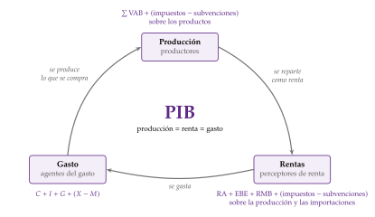
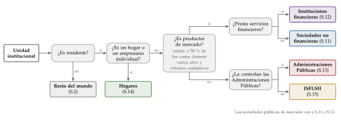
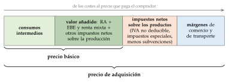
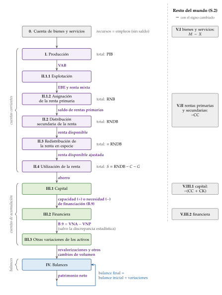
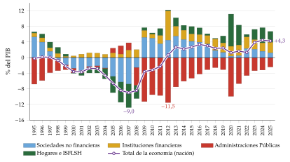
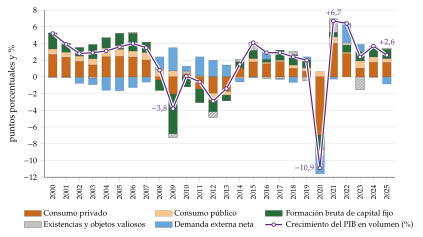

Tema 3.A.30
Magnitudes macroeconómicas y contabilidad nacional.
PIB por las tres vías, RNB, renta disponible, sucesión de cuentas del SEC 2010, ahorro e inversión por sectores, contribuciones al crecimiento y límites del PIB
Exclusivo Material exclusivo de victorgutierrezmarcos.es y la app Oposición TCEE · DCE. Puedes usarlo libremente para tu estudio personal. No se autoriza su incorporación a otras plataformas, aplicaciones o servicios. Condiciones de uso.
Introducción
Enganche:
«A ojo de buen cubero», dice el refrán: calcular sin medir, a simple vista.
Así se hacía la política económica hasta los años 30. Cuando llegó la Gran Depresión, ningún Gobierno sabía cuánto había caído la renta de su país.
En 1932 el Senado de Estados Unidos encargó que se midiera. El trabajo lo dirigió Simon Kuznets, y en enero de 1934 el Senado recibió la primera estimación oficial de la renta nacional del país, para los años 1929-1932 (Kuznets, 1934; Bureau of Economic Analysis, 2020).
Hoy el Instituto Nacional de Estadística (INE) publica el PIB de España 30 días después de acabar cada trimestre: el 30 de octubre de 2026 adelantó que en el tercer trimestre había crecido un 0,6 % (Instituto Nacional de Estadística, 2026a).
Un aforismo de la gestión lo resume: no se puede gestionar lo que no se puede medir. La contabilidad nacional es la que mide una economía entera, y sus magnitudes macroeconómicas son las cifras con las que se discute, se gobierna y se reparte.
Relevancia:
Para la política económica: las cuentas nacionales son la base de las previsiones, de los presupuestos y de la evaluación de las políticas.
En la Unión Europea tienen además efectos jurídicos y financieros: con ellas se miden el déficit y la deuda del procedimiento de déficit excesivo [ver tema 3.A.39].
Con ellas se calcula también la aportación de cada Estado al presupuesto de la Unión, a través del recurso propio basado en la renta nacional bruta, y se reparten los fondos de la política de cohesión (Parlamento Europeo y Consejo de la Unión Europea, 2013).
Para la teoría: la macroeconomía razona con agregados (producción, consumo, inversión, ahorro), y la contabilidad nacional es la que los define y los mide [ver tema 3.A.4]. Sus identidades son el punto de partida de cualquier modelo: ninguna teoría puede contradecirlas.
Para el bienestar: el PIB por habitante es la medida más usada del nivel de vida, y el ahorro y la inversión indican si ese nivel se podrá mantener. Por eso importa saber bien qué mide y qué deja fuera (apartado III.3).
Contextualización:
Una teoría y una necesidad: la contabilidad nacional moderna nace en los años 30 y 40. La empujan la teoría keynesiana, que piensa en agregados, y la economía de guerra, que necesita saber cuánto puede producir un país.1
Los pioneros: Simon Kuznets en Estados Unidos y Richard Stone y James Meade en el Reino Unido.
En 1940-1941, Meade y Stone, desde la oficina económica del Gabinete de Guerra británico y animados por John Maynard Keynes, prepararon las primeras estimaciones oficiales de la renta nacional, ya en partida doble (Nobel Prize Outreach, 1977, 1984).
Stone llevó a las cuentas de un país la lógica contable de la empresa y dirigió después los trabajos de normalización de Naciones Unidas.2
La armonización: el primer Sistema de Cuentas Nacionales de Naciones Unidas (SCN) es de 1953, y la última revisión, de 2025. En la Unión Europea rige su versión europea, el Sistema Europeo de Cuentas (SEC 2010), que es un reglamento de obligado cumplimiento (Parlamento Europeo y Consejo de la Unión Europea, 2013; Naciones Unidas et al., 2025).
La idea de partida: las unidades de una economía actúan a la vez como productores, como perceptores de renta y como agentes del gasto. Por eso lo que se produce, la renta que genera y el gasto que la absorbe son 3 medidas del mismo flujo.
Problemática:
¿Pueden unas pocas cifras resumir la actividad de millones de agentes?
¿Qué es una magnitud macroeconómica, y por qué la producción, la renta y el gasto de un país son la misma cifra?
¿Con qué reglas se registra la actividad de toda una economía para que las cifras sean comparables entre países y en el tiempo?
¿Cómo se pasa de lo que se produce a la renta, al ahorro y a la financiación, y qué magnitud mide cada paso?
¿Qué dicen esas magnitudes y qué dejan fuera?
Estructura:
La exposición tiene 3 partes, que responden a las preguntas por orden:
el bloque I presenta qué se mide y con qué reglas: las magnitudes que salen del flujo circular de la renta y el sistema que las define, el SEC 2010, con sus unidades y sus principios contables;
el bloque II explica cómo se miden: la sucesión de cuentas, de la producción al patrimonio, con el agregado que sale de cada cuenta y para qué sirve;
el bloque III trata el uso y los límites de las magnitudes: cómo se pasa del valor al volumen, con qué fuentes se elaboran y qué no mide el PIB.
El orden va de la regla a la cifra y de la cifra a su lectura: sin saber cómo se registra una operación no se puede interpretar el saldo que resulta, y sin saber cómo se construye el PIB no se puede juzgar lo que deja fuera.
3.A.30. Magnitudes macroeconómicas y contabilidad nacional
Introducción2′30″
I. Características generales y principios fundamentales del SEC 20106′30″
1. Concepto y características generales: ¿qué es el SEC 2010?
2. Medición y principios fundamentales del SEC 2010 como sistema
II. La sucesión de cuentas13′30″
1. Cuenta de bienes y servicios
2. Cuentas corrientes
3. Cuentas de acumulación
4. Balances
5. Cuentas del resto del mundo
6. Otras cuentas y aportaciones del SEC 2010
III. Uso y límites de las magnitudes macroeconómicas6′30″
1. Del valor al volumen: deflactor y contribuciones al crecimiento
2. Elaboración, fuentes y datos de alta frecuencia
3. El PIB y el bienestar: limitaciones e indicadores alternativos
Conclusión1′
Reparto del cante:
introducción, 2′30″;
I, 6′30″ (I.1, 2′30″; I.2, 4′);
II, 13′30″ (II.1, 1′; II.2, 6′; II.3, 3′30″; II.4, 1′; II.5, 1′; II.6, 1′);
III, 6′30″ (III.1, 2′30″; III.2, 1′30″; III.3, 2′30″);
conclusión, 1′.
Es un tema de definiciones encadenadas. Lo que se canta es la cadena de saldos, de la producción a la capacidad o necesidad de financiación, qué mide cada agregado y por qué cuadran las cuentas. Las cuentas en forma de T, los códigos del SEC y los anexos son para las preguntas del tribunal.
I. Características generales y principios fundamentales del SEC 2010
Empezamos por lo que se mide y por las reglas con que se mide, porque sin ellas no se puede leer ninguna cuenta.
Conclusión anticipada: la producción, la renta y el gasto de un país son 3 formas de ver un mismo flujo, y de esa igualdad salen todas las identidades macroeconómicas. El SEC 2010 convierte esa idea en un sistema contable, con unas unidades, unas operaciones y 4 principios (partida cuádruple, devengo, valoración y residencia) comunes a toda la Unión Europea.
I.1. Concepto y características generales: ¿qué es el SEC 2010?
I.1.1. Las magnitudes macroeconómicas y el flujo circular de la renta
Una magnitud macroeconómica (o agregado) resume en una cifra el resultado de las decisiones de millones de hogares, empresas y administraciones.
Casi todas son flujos, que se miden por unidad de tiempo: la producción, la renta, el consumo o el ahorro de un año.
La riqueza y la deuda son stocks, que se miden en una fecha.
La idea que las ordena es el flujo circular de la renta (gráfico 1):
las empresas producen con el trabajo y el capital que aportan los hogares;
lo que producen se reparte como renta entre quienes han aportado esos factores;
esa renta se gasta en lo producido, y el circuito vuelve a empezar.
Medido en cualquiera de los 3 puntos del circuito, el flujo es el mismo. De ahí salen las 3 vías de cálculo del producto:
por la producción, se suman los valores añadidos brutos de todas las unidades, para no contar 2 veces los bienes intermedios: \(Y\equiv\sum\mathrm{VAB}\);
por la renta, se suma lo que cobran el trabajo y el capital: \(Y\equiv\mathrm{RA}+\mathrm{EBE}\), con \(\mathrm{RA}\) la remuneración de los asalariados y \(\mathrm{EBE}\) el excedente, que es residual (lo que queda tras pagar al trabajo);
por el gasto, se suma lo que se consume y lo que se invierte: \(Y\equiv C+I\).

Fuente: elaboración propia a partir de Lequiller y Blades (2018, cap. 1).
La primera identidad: como el ahorro es la renta que no se consume, \(S\equiv Y-C\), en una economía cerrada y sin sector público el ahorro es, por definición, igual a la inversión: \(S\equiv I\).
Con sector público y con el exterior: el gasto incluye el consumo de las administraciones (\(G\)) y las ventas netas al resto del mundo, \(Y\equiv C+I+G+(X-M)\). La igualdad entre ahorro e inversión ya no se cumple sector a sector, sino para el conjunto:
lo que un sector ahorra por encima de lo que invierte lo presta a otro;
lo que la nación entera ahorra por encima de lo que invierte lo presta al resto del mundo (apartado II.3).
La cadena de saldos: toda la contabilidad nacional se puede leer como una cadena que va de la producción a la financiación. Cada eslabón suma o resta una operación, y cada saldo es una magnitud que se desarrolla en el bloque II:
\[\begin{gathered}\mathrm{PIB}\xrightarrow{\;+\mathrm{RP}\;}\mathrm{RNB}\xrightarrow{\;+\mathrm{RS}\;}\mathrm{RNDB}\xrightarrow{\;-(C+G)\;}S\\ S\xrightarrow{\;-I+\mathrm{CK}\;}\text{capacidad }(+)\text{ o necesidad }(-)\text{ de financiación}\end{gathered}\tag{1}\]
\(\mathrm{RP}\) y \(\mathrm{RS}\) son las rentas primarias y secundarias netas que se reciben del resto del mundo; \(\mathrm{RNB}\) y \(\mathrm{RNDB}\), la renta nacional bruta y la renta nacional disponible bruta; \(S\), el ahorro nacional, y \(\mathrm{CK}\), las transferencias de capital netas.
En palabras: son identidades, no teorías. Se cumplen siempre, por cómo se definen las variables, y no dicen qué causa qué; pero ninguna explicación del crecimiento, del ciclo o del saldo exterior puede contradecirlas.
I.1.2. Proceso de armonización internacional e importancia de un sistema homogéneo
El Sistema Europeo de Cuentas Nacionales y Regionales (SEC 2010) es el marco contable con el que los Estados de la Unión describen de forma sistemática y comparable toda su economía, sus partes y sus relaciones con las demás economías.
Lo establece el Reglamento (UE) n.º 549/2013, que se aplica a los datos transmitidos desde septiembre de 2014 (Parlamento Europeo y Consejo de la Unión Europea, 2013).
Un reglamento de 2023 lo actualizó y cambió los requisitos de transmisión de datos desde septiembre de 2024 (Parlamento Europeo y Consejo de la Unión Europea, 2023).
De dónde viene:
el Sistema de Cuentas Nacionales de Naciones Unidas es la norma mundial. El primero es de 1953, y se ha revisado en 1968, 1993, 2008 y 2025; desde 1993 lo elaboran juntos Naciones Unidas, la Comisión Europea, el FMI, la OCDE y el Banco Mundial (División de Estadística de las Naciones Unidas, 2026; Naciones Unidas et al., 2025);
el SEC es su versión europea: el SEC 2010 adapta el SCN 2008, igual que el SEC 95 adaptó el de 1993. Es más preciso en lo que la Unión necesita, como la frontera del sector público o las operaciones con las instituciones europeas (anexo B);
respecto al SEC 95, la estructura básica apenas cambia, pero sí algunos conceptos: el más conocido, que el gasto en I+D pasa a ser inversión (anexo A).
Lo que viene: en marzo de 2025 la Comisión de Estadística de Naciones Unidas adoptó el SCN 2025, a la vez que el FMI publicaba la séptima edición de su manual de balanza de pagos (MBP7) (Naciones Unidas et al., 2025; Fondo Monetario Internacional, 2025).
La Unión lo trasladará con un nuevo SEC, que Eurostat llama provisionalmente SEC 2030.
La Comisión debe proponerlo a finales de 2026, y los cambios principales se aplicarán desde 2030 (Eurostat, 2026a; Verrinder, 2026).
Hasta entonces, las cuentas españolas siguen el SEC 2010, que el INE aplica desde septiembre de 2014 (Instituto Nacional de Estadística, 2014).
Por qué es necesario un sistema común: hace comparables las cifras entre países y en el tiempo. En la Unión es, además, una condición del gobierno económico: el Pacto de Estabilidad y Crecimiento y el Semestre Europeo se aplican sobre cifras del SEC, y sin cifras homogéneas no se podrían vigilar.
Rasgos y usos del SEC 2010
Para equilibrar lo que se querría saber con lo que se puede medir, las cuentas del SEC 2010 tienen 8 rasgos (Parlamento Europeo y Consejo de la Unión Europea, 2013, cap. 1):
son compatibles a escala internacional, porque siguen el SCN;
están armonizadas con las demás estadísticas económicas y sociales, porque usan las mismas clasificaciones (como la CNAE de actividades);
son coherentes: cada operación se anota igual en todas las cuentas a las que afecta, y eso permite obtener partidas por diferencia;
son operativas: sus conceptos están definidos para que se puedan medir;
se apartan de los conceptos administrativos de cada país, para que las cifras sean comparables entre países y en el tiempo;
son estables: sus conceptos se mantienen durante periodos largos;
describen el proceso económico en términos monetarios y observables;
sirven para fines distintos y en situaciones distintas.
Con ellas se analiza la estructura de una economía, sus sectores o aspectos concretos, su evolución en el tiempo y su posición frente a otras economías.
I.1.3. Estructura general del SEC
El SEC 2010 tiene 24 capítulos y 2 grandes conjuntos de cuentas (Parlamento Europeo y Consejo de la Unión Europea, 2013):
las cuentas de los sectores institucionales, que describen, sector a sector, las fases del proceso económico: la producción, la generación, la distribución, la redistribución y la utilización de la renta, y la acumulación no financiera y financiera, con los balances al principio y al final del periodo (bloque II);
el marco input-output y las cuentas por ramas de actividad, que describen con más detalle el proceso productivo y los flujos de productos (apartado II.6) [ver tema 3.A.31].
En España elaboran las cuentas el INE (las no financieras), el Banco de España (las financieras y la balanza de pagos) y la Intervención General de la Administración del Estado (las de las Administraciones Públicas) (apartado III.2).
I.2. Medición y principios fundamentales del SEC 2010 como sistema
I.2.1. Registro de las operaciones: los flujos y los stocks
El SEC registra 2 tipos de variables:
los flujos, que ocurren a lo largo de un periodo y crean, transforman, intercambian, transfieren o extinguen valor económico;
los stocks, que son la situación de los activos y pasivos en una fecha.
Los flujos explican cómo se pasa del stock inicial al final, como el agua que entra y sale de un depósito. «Gota a gota se llena la bota»: el patrimonio de un país es la suma de los flujos que lo han ido formando.
Los flujos son de 2 clases:
las operaciones, que son interacciones de mutuo acuerdo entre unidades, o acciones dentro de una misma unidad cuando actúa con 2 papeles distintos (la empresa que fabrica su propia maquinaria). Hay 4 grupos (Parlamento Europeo y Consejo de la Unión Europea, 2013, cap. 1):
las operaciones de bienes y servicios (P) dicen de dónde salen los productos (producción e importaciones) y a qué se destinan (consumo intermedio, consumo final, formación de capital y exportaciones);
las operaciones de distribución (D) dicen cómo se reparte el valor añadido entre el trabajo, el capital y las Administraciones Públicas, y cómo se redistribuyen la renta y la riqueza;
las operaciones financieras (F) recogen la adquisición neta de activos financieros y la contracción neta de pasivos, por instrumentos; son la contrapartida de las demás o se hacen solo entre instrumentos financieros;
las otras operaciones de acumulación recogen las adquisiciones menos cesiones de activos no financieros no producidos (tierras, licencias, marcas);
las otras variaciones de los activos, que cambian el patrimonio sin que haya una operación:
las otras variaciones del volumen: descubrimientos, catástrofes, expropiaciones sin indemnización, cambios de clasificación;
las ganancias y pérdidas de posesión, por la variación de los precios de los activos. Las neutrales son las que acompañan al nivel general de precios, y las reales, lo que va más allá (Parlamento Europeo y Consejo de la Unión Europea, 2013, cap. 6).
Los stocks se anotan en los balances, al principio y al final del periodo. La población y el empleo también se registran, pero por su media del periodo (apartado II.6).
I.2.2. ¿Quién realiza las operaciones? Las unidades y su agrupación
El SEC usa 2 tipos de unidades, para 2 fines distintos:
para la renta, el gasto, la financiación y los balances, agrupa unidades institucionales en sectores, según su función y su comportamiento;
para la producción y el análisis input-output, agrupa unidades de actividad económica locales en ramas de actividad.
Una unidad institucional es una entidad que decide por sí misma y lleva cuentas completas: puede tener bienes y activos, contraer pasivos y hacer operaciones en nombre propio.
Las unidades residentes forman 5 sectores institucionales, que no se solapan (gráfico 2):
las sociedades no financieras (S.11) producen bienes y servicios no financieros de mercado y se financian con sus ventas;
las instituciones financieras (S.12) prestan servicios financieros de mercado; el banco central es uno de sus subsectores (S.121);
las Administraciones Públicas (S.13) producen servicios no de mercado y redistribuyen la renta, y se financian sobre todo con pagos obligatorios (impuestos y cotizaciones). Tienen 4 subsectores: la administración central, las comunidades autónomas, las corporaciones locales y los fondos de la Seguridad Social [ver tema 4.B.1];
los hogares (S.14) consumen, ofrecen trabajo y, como empresarios individuales, también producen, incluso para su propio uso; se financian sobre todo con las rentas de sus factores;
las instituciones sin fines de lucro al servicio de los hogares (ISFLSH, S.15), como sindicatos, partidos, asociaciones y fundaciones, prestan servicios no de mercado y se financian con aportaciones voluntarias.3
Las unidades no residentes que operan con ellas forman el resto del mundo (S.2). No es un sector, pero tiene sus propias cuentas (apartado II.5).
De mercado o no de mercado: un productor es de mercado si vende a precios económicamente significativos.
La regla cuantitativa es que sus ventas cubran al menos el 50 % de sus costes de producción de forma continuada durante varios años (Parlamento Europeo y Consejo de la Unión Europea, 2013).
La regla se completa con criterios cualitativos: a quién vende y si compite con otros productores.
Una empresa pública que pasa la prueba va a S.11 o S.12; si no la pasa, a S.13 [ver tema 4.B.1].
La balanza de pagos agrupa a los residentes de otra manera, en 4 sectores pensados para ver quién se relaciona con el exterior. La contabilidad nacional agrupa primero a todas las instituciones financieras y después distingue entre ellas al banco central, porque mira cómo se relacionan los sectores dentro de la economía [ver tema 3.B.11].
Ramas de actividad: una unidad de actividad económica local (UAE local) es la parte de una unidad institucional que produce en un solo lugar y se dedica a una sola actividad, definida al nivel de 4 dígitos de la CNAE.
Las ramas de actividad agrupan UAE locales con la misma actividad.
Las ramas homogéneas, que son las de la tabla input-output simétrica, agrupan unidades de producción homogénea, que hacen un solo producto (Parlamento Europeo y Consejo de la Unión Europea, 2013, cap. 2) [ver tema 3.A.31].

Fuente: elaboración propia a partir del SEC 2010 (Parlamento Europeo y Consejo de la Unión Europea, 2013, cap. 2 y 20).
I.2.3. Principios contables
Una cuenta registra los flujos de una unidad o de un sector según su naturaleza. Tiene 2 lados, y lo que los iguala es el saldo contable, que pasa como primera partida a la cuenta siguiente: así se encadenan las cuentas.
En las cuentas corrientes van a la izquierda los empleos (lo que reduce el valor económico de la unidad) y a la derecha los recursos (lo que lo aumenta).
En las cuentas de acumulación van a la izquierda las variaciones de los activos y a la derecha las de los pasivos y el patrimonio neto.
En los balances van a la izquierda los activos y a la derecha los pasivos y el patrimonio neto.
Las operaciones se anotan con los mismos principios que la balanza de pagos, que los desarrolla con un ejemplo de asientos y una tabla de equivalencias entre los 2 sistemas [ver tema 3.B.11]:
la partida cuádruple dice cuántos asientos hay;
el devengo dice cuándo se anotan;
la valoración dice por cuánto;
la residencia dice quién está dentro y quién fuera.
Registro: partida doble y partida cuádruple
Partida doble: cada unidad anota cada operación 2 veces y por el mismo importe, en una cuenta no financiera y en la financiera, o 2 veces en la financiera. Así las cuentas de cada unidad cuadran.
Partida cuádruple: casi todas las operaciones tienen 2 partes, y cada una anota la operación 2 veces, de modo que hay 4 asientos.
Por ejemplo, cuando una administración paga una prestación por desempleo, anota un empleo (la transferencia) y una disminución de su efectivo; el hogar que la cobra anota un recurso (la transferencia) y un aumento de su efectivo (Parlamento Europeo y Consejo de la Unión Europea, 2013, cap. 1).
Es lo que hace que las cuentas de todos los sectores cuadren entre sí.
Las operaciones dentro de una misma unidad (lo que una empresa produce para sí misma) solo llevan 2 asientos, y su valor se estima.
Momento del registro: el devengo
Las operaciones se anotan cuando se crea, transforma, intercambia, transfiere o extingue el valor económico, no cuando se cobran o se pagan.
La producción se anota cuando se produce, y la venta de un activo, cuando cambia la propiedad.
Los intereses se anotan en el periodo en que se devengan, aunque se paguen después.
También los impuestos y las cotizaciones se anotan por devengo. Como parte de lo devengado nunca se cobra, en la práctica se usa la caja ajustada en el tiempo: lo recaudado, llevado al periodo en que nació la obligación (Parlamento Europeo y Consejo de la Unión Europea, 2013, cap. 4). Por eso el déficit de la contabilidad nacional no coincide con el de caja [ver tema 3.A.39].
Valoración
En términos monetarios y a precios de mercado: los flujos y los stocks se valoran por lo que se intercambian, o podrían intercambiarse, por dinero. Cuando no hay precio de mercado, se usa, por este orden (Parlamento Europeo y Consejo de la Unión Europea, 2013, cap. 1):
el precio de mercado de bienes o activos parecidos, como en el alquiler imputado de la vivienda en propiedad;4
los costes de producción, como en los servicios no de mercado de las Administraciones Públicas (la educación, la sanidad);
como último recurso, el valor actual de los rendimientos futuros esperados.
Los stocks se valoran a los precios de la fecha del balance, no a los de cuando se compraron.
Precios básicos y precios de adquisición: el productor y el comprador ven el mismo bien a precios distintos, por los impuestos sobre los productos y los márgenes. El SEC anota la producción por lo que recibe el productor y los empleos por lo que paga el comprador (gráfico 3):
el precio básico es lo que cobra el productor por unidad: no incluye los impuestos sobre los productos (IVA, impuestos especiales) y sí las subvenciones a los productos; incluye los otros impuestos netos sobre la producción, los que se pagan por producir y no por cada unidad vendida (el IBI de la fábrica, las tasas) (Eurostat, 2013a);
el precio de adquisición es lo que paga el comprador: el básico, más los márgenes de comercio y de transporte y los impuestos netos sobre los productos que el comprador no puede deducirse.
Por eso los valores añadidos se miden a precios básicos y el PIB a precios de mercado, y la diferencia entre los 2 son los impuestos netos sobre los productos, que no se asignan a ninguna rama: \[\tag{2} \mathrm{PIB}_{\mathrm{pm}}=\sum\mathrm{VAB}_{\mathrm{pb}}+(\text{impuestos}-\text{subvenciones})_{\text{productos}} .\]
Las exportaciones y las importaciones se valoran FOB (free on board), en la frontera del país exportador; el flete y el seguro posteriores son servicios. Es el mismo criterio que el de la balanza de pagos [ver tema 3.B.11].
A precios constantes: para separar en la variación de un valor la parte que se debe a los precios y la que se debe al volumen, los flujos se valoran a los precios de otro periodo. Hoy se hace con volúmenes encadenados (apartado III.1).5

Fuente: elaboración propia a partir de Eurostat (2013a).
Los impuestos y las subvenciones ligados a la producción
| Partida | Qué incluye |
|---|---|
| D.21 Impuestos sobre los productos | Se pagan por unidad producida o vendida: IVA, impuestos especiales, derechos de importación |
| D.29 Otros impuestos sobre la producción | Se pagan por producir, se venda lo que se venda: IBI de los inmuebles de las empresas, IAE, tasas por licencias |
| D.31 Subvenciones a los productos | Se reciben por unidad producida o vendida |
| D.39 Otras subvenciones a la producción | Se reciben por producir: ayudas a la contratación, a la reducción de la contaminación |
Fuente: elaboración propia a partir del SEC 2010 (Parlamento Europeo y Consejo de la Unión Europea, 2013, cap. 4).
El PIB a precios de mercado suma a los VAB a precios básicos los impuestos netos sobre los productos, \(\mathrm{D.21}-\mathrm{D.31}\).
El VAB a precios básicos ya incluye los otros impuestos netos sobre la producción, \(\mathrm{D.29}-\mathrm{D.39}\).
El antiguo «VAB al coste de los factores» (el VAB a precios básicos menos \(\mathrm{D.29}-\mathrm{D.39}\)) ya no es un saldo del SEC 2010. La clasificación completa de los impuestos se estudia aparte [ver tema 4.B.7].
Residencia
Una unidad es residente de un país si su centro de interés económico predominante está en su territorio económico: allí vive o produce, y desde allí opera de forma significativa durante un año o más, una referencia que no es una regla rígida (Parlamento Europeo y Consejo de la Unión Europea, 2013). Manda la residencia, no la nacionalidad: «no es de donde naces, sino de donde paces».
Se aplica igual que en la balanza de pagos [ver tema 3.B.11]:
los hogares son residentes donde tienen su vivienda principal; los estudiantes, los pacientes y los turistas siguen siendo residentes de su país;
las filiales son residentes donde operan, y también las sucursales con una producción significativa en ese territorio durante un año o más;
las Administraciones Públicas son residentes con todos sus organismos, incluidas las embajadas y las bases militares en el exterior;
los organismos internacionales no son residentes de ninguna economía, tampoco de la que los acoge: para España, el Banco Central Europeo es resto del mundo.
Interior y nacional, bruto y neto
La residencia separa 2 maneras de medir:
lo interior es lo que ocurre en el territorio, lo haga quien lo haga: el producto interior bruto (PIB) mide lo que se produce dentro;
lo nacional es lo que hacen o ingresan los residentes, estén donde estén: la renta nacional bruta (RNB) suma al PIB las rentas primarias netas que llegan del exterior (apartado II.2.3).
La depreciación separa otras 2:
los agregados brutos incluyen el consumo de capital fijo (CCF), el desgaste y la obsolescencia del capital en el periodo;
los netos lo descuentan: \(\mathrm{PIN}=\mathrm{PIB}-\mathrm{CCF}\). Son más correctos como medida de lo que se crea, pero se usan menos, porque la depreciación se mide peor.
Recapitulando: sabemos qué se mide, las magnitudes del flujo circular y sus identidades, y con qué reglas: unidades y sectores, partida cuádruple, devengo, valoración y residencia. Con ellas pasamos a la sucesión de cuentas, donde cada magnitud aparece como el saldo de una cuenta.
II. La sucesión de cuentas
Una vez fijadas las reglas, pasamos a las cuentas, que es donde se obtienen las magnitudes.
Conclusión anticipada: las cuentas forman una cadena. Cada una describe una fase del proceso económico, y su saldo (el valor añadido, el excedente, la renta, el ahorro, la capacidad de financiación) pasa a la siguiente. Los agregados son esos saldos para el total de la economía.
La sucesión tiene 3 grandes bloques, precedidos por la cuenta de bienes y servicios y cerrados por la del resto del mundo (gráfico 4):
las cuentas corrientes van de la producción a la utilización de la renta y terminan en el ahorro;
las cuentas de acumulación cuentan cómo se usa el ahorro para comprar activos y cómo se financia la diferencia, y terminan en la capacidad o necesidad de financiación;
los balances dan el patrimonio al principio y al final del periodo.
Cada cuenta se presenta con las mismas 4 preguntas: qué registra, qué hay en sus empleos y recursos, cuál es su saldo y qué mide ese saldo. Las cuentas completas, con sus códigos, están en el anexo C.

Fuente: elaboración propia a partir del SEC 2010 (Parlamento Europeo y Consejo de la Unión Europea, 2013, cap. 8).
II.1. Cuenta de bienes y servicios
Qué registra:
La cuenta de bienes y servicios (cuenta 0) es la identidad de partida del sistema: todo lo que se ofrece en la economía, producido dentro o importado, tiene un destino.
Es una cuenta de productos y no de unidades: se hace para el total de la economía y, en las tablas de origen y destino, para cada producto.
Recursos y empleos:
En los recursos van la producción a precios básicos, las importaciones y los impuestos netos sobre los productos.
En los empleos van el consumo intermedio, el gasto en consumo final, la formación bruta de capital y las exportaciones, a precios de adquisición.
Saldo:
No tiene: recursos y empleos son iguales por construcción. No es la suma de todos los empleos y recursos de la sucesión, sino el equilibrio entre la oferta y los usos de los productos.
Qué mide y para qué sirve:
De ella sale el PIB por el gasto. Restando a los 2 lados los consumos intermedios y las importaciones, lo que queda a un lado es el PIB por la producción y al otro, el PIB por el gasto: \[\underbrace{\mathrm{P.1}-\mathrm{P.2}+(\mathrm{D.21}-\mathrm{D.31})}_{\text{PIB por la producción}}=\underbrace{C+I+G+(X-M)}_{\text{PIB por el gasto}} .\]
Producto a producto, es la identidad que las tablas de origen y destino obligan a cumplir (apartado II.6).
II.2. Cuentas corrientes
Las cuentas corrientes registran la producción, la generación, la distribución y la redistribución de la renta, y su utilización en consumo y ahorro.
Empiezan en la producción, porque de ella sale toda la renta que después se reparte, y terminan en el ahorro, que enlaza con la acumulación.
II.2.1. Cuenta de producción
Qué registra:
El proceso de producción: lo que se produce y lo que se gasta para producirlo.
Empleos y recursos:
En los recursos va la producción a precios básicos.
En los empleos van los consumos intermedios: los bienes y servicios que se gastan en el proceso (energía, materiales, transporte, publicidad, alquileres, programas), a precios de adquisición. No son consumos intermedios los salarios ni los activos fijos.6
Para el total de la economía, los impuestos netos sobre los productos se suman a sus recursos, porque no se asignan a ningún sector.
Saldo:
El valor añadido bruto (VAB) de cada sector o rama, a precios básicos.
Para el total, el producto interior bruto (PIB) a precios de mercado, que es la suma de los VAB más los impuestos netos sobre los productos (ecuación (2)).
Qué mide y para qué sirve:
El valor que crea la producción, sin contar 2 veces los bienes intermedios.
El PIB es el agregado central del sistema: mide la actividad, su ciclo y su crecimiento, y es el denominador de las ratios de déficit y de deuda.
El PIB por las 3 vías
El PIB a precios de mercado es el resultado final de la actividad productiva de las unidades residentes en un territorio: el valor de mercado de todos los bienes y servicios nuevos y finales producidos en ese territorio en un periodo (Parlamento Europeo y Consejo de la Unión Europea, 2013).
Se mide de 3 formas, que son los 3 vértices del flujo circular (gráfico 1):
\[\begin{aligned}\mathrm{PIB}&=\underbrace{\textstyle\sum\mathrm{VAB}+(\text{impuestos}-\text{subvenciones})_{\text{productos}}}_{\text{producción}}\\&=\underbrace{\mathrm{RA}+\mathrm{EBE}+\mathrm{RMB}+(\text{impuestos}-\text{subvenciones})_{\text{prod. e import.}}}_{\text{rentas}}\\&=\underbrace{C+I+G+(X-M)}_{\text{gasto}}\end{aligned}\tag{3}\]
la producción (la oferta) suma los valores añadidos brutos de los sectores o ramas, que son la producción menos los consumos intermedios, y los impuestos netos sobre los productos;
las rentas suman la remuneración de los asalariados (\(\mathrm{RA}\)), el excedente bruto de explotación (\(\mathrm{EBE}\)) y la renta mixta bruta (\(\mathrm{RMB}\)), que se definen en la cuenta de explotación (apartado II.2.2), y los impuestos netos sobre la producción y las importaciones;
el gasto (la demanda) suma los empleos finales de los residentes y las exportaciones, y resta las importaciones.
Las letras del gasto tienen un sentido preciso:
\(C\) es el gasto en consumo final de los hogares y de las ISFLSH; la compra de vivienda nueva no es consumo, sino inversión [ver tema 3.A.33];
\(I\) es la formación bruta de capital, con 3 partidas: la formación bruta de capital fijo, la variación de existencias y las adquisiciones menos cesiones de objetos valiosos [ver tema 3.A.34];
\(G\) es el gasto en consumo final de las Administraciones Públicas; la inversión pública va en \(I\);
\(X\) y \(M\) son las exportaciones y las importaciones de bienes y servicios.
En la práctica: las 3 vías no salen iguales de las fuentes. El INE las equilibra producto a producto y rama a rama en las tablas de origen y destino, que fijan un único nivel del PIB, coherente con sus 3 descomposiciones (Parlamento Europeo y Consejo de la Unión Europea, 2013, cap. 9) [ver tema 3.A.31].
Las reglas del agregado: al pasar de las cuentas de cada unidad al total, los contables nacionales buscan 3 cosas (Lequiller y Blades, 2018, cap. 1):
no contar 2 veces lo mismo;
que los agregados tengan sentido económico y no cambien por razones ajenas a la economía, como que una empresa se divida en 2;
que se puedan medir.
El PIB de España en 2025 por las 3 vías
| Millones | % PIB | |
|---|---|---|
| Producción | ||
| VAB a precios básicos | 1.531.681 | 90,6 |
| \(+\) Impuestos netos sobre los productos | 158.331 | 9,4 |
| Rentas | ||
| Remuneración de los asalariados (\(\mathrm{RA}\)) | 817.261 | 48,4 |
| \(+\) Excedente bruto de explotación y renta mixta bruta | 703.714 | 41,6 |
| \(+\) Impuestos netos sobre la producción y las importaciones | 169.037 | 10,0 |
| Gasto | ||
| Gasto en consumo final de los hogares y las ISFLSH (\(C\)) | 932.945 | 55,2 |
| \(+\) Gasto en consumo final de las AAPP (\(G\)) | 324.514 | 19,2 |
| \(+\) Formación bruta de capital (\(I\)) | 367.451 | 21,7 |
| \(+\) Exportaciones (\(X\)) | 616.488 | 36,5 |
| \(-\) Importaciones (\(M\)) | 551.386 | 32,6 |
| PIB a precios de mercado | 1.690.012 | 100,0 |
Fuente: elaboración propia con datos del INE (Instituto Nacional de Estadística, 2026c), tomados de Eurostat (Eurostat, 2026c, 2026d); presentación por las 3 vías a partir de Gutiérrez Hernández (2021). Avance de 2025.
Las 3 vías suman exactamente lo mismo: 1,69 billones de euros. En 2025 el PIB creció un 2,6 % en volumen y su deflactor, un 3,0 % (Instituto Nacional de Estadística, 2026c).
La formación bruta de capital se reparte entre la formación bruta de capital fijo (354.333 millones) y la variación de existencias y objetos valiosos (13.118) (Eurostat, 2026c).
II.2.2. Cuenta de explotación
Qué registra:
Cómo se reparte el valor añadido entre quienes han intervenido en la producción: el trabajo, el capital y las Administraciones Públicas, por los impuestos ligados a la producción.
Empleos y recursos:
En los recursos va el saldo de la cuenta anterior: el VAB y, para el total, el PIB.
En los empleos va la remuneración de los asalariados: todo lo que los empleadores residentes pagan por el trabajo, a residentes y no residentes, en dinero o en especie; incluye los sueldos y salarios y las cotizaciones sociales a cargo del empleador.
En los empleos van también los impuestos netos sobre la producción y las importaciones. En un sector, solo los otros impuestos netos sobre la producción, porque los que gravan los productos no forman parte de su VAB a precios básicos.
Saldo:
El excedente bruto de explotación (EBE) de las sociedades.
En los hogares, la renta mixta bruta (RMB) de los autónomos y empresarios individuales, que remunera a la vez su trabajo y su capital, porque no se pueden separar.
Qué mide y para qué sirve:
Lo que queda para el capital antes de pagar intereses, rentas de la tierra y dividendos: es la base para medir la rentabilidad y los márgenes.
Mide la distribución funcional de la renta. La remuneración de los asalariados sobre el PIB es la medida habitual de la participación del trabajo: en España, el 48,4 % en 2025 (Eurostat, 2026c).
Esa medida hay que corregirla por la renta mixta, que en parte remunera trabajo: imputando a cada autónomo el salario medio de un asalariado, la participación ajustada sube al 56,6 % (Comisión Europea, 2026) [ver tema 3.A.45].
Para el total, los empleos de esta cuenta dan el PIB por las rentas, la segunda línea de (3).
II.2.3. Cuenta de asignación de la renta primaria
Qué registra:
Las rentas primarias que cobran las unidades residentes por su papel en la producción o por prestar sus activos. Mira a las unidades como perceptoras de renta y no como productoras.
Empleos y recursos:
En los recursos van el EBE y la renta mixta, la remuneración de los asalariados que cobran los hogares residentes (también la que pagan empleadores de fuera), los impuestos netos sobre la producción y las importaciones que cobran las Administraciones Públicas y las rentas de la propiedad a cobrar: intereses, dividendos, rentas de la tierra.
En los empleos van las rentas de la propiedad a pagar.
Saldo:
El saldo de las rentas primarias de cada sector.
Para el total, la renta nacional bruta (RNB), que es el PIB más las rentas primarias netas que llegan del resto del mundo, \(\mathrm{RNB}=\mathrm{PIB}+\mathrm{RP}\).7
Qué mide y para qué sirve:
Lo que ingresan los residentes por producir. Es la base del principal recurso propio del presupuesto de la Unión.
Se aleja del PIB en los países con mucha inversión extranjera, que pagan fuera buena parte de los beneficios (Irlanda tiene una RNB muy por debajo de su PIB), o con muchos trabajadores en el exterior.
La regla de que un país deudor neto tiene una RNB menor que su PIB no siempre se cumple. En 2025 la de España superó al PIB en un 0,2 %, aunque es deudora neta: los salarios que cobran sus residentes fuera y las subvenciones de la Unión compensan las rentas de la propiedad que paga al exterior (Instituto Nacional de Estadística, 2026c; Eurostat, 2026d).
II.2.4. Cuenta de distribución secundaria de la renta
Qué registra:
La redistribución en dinero: las transferencias corrientes sin contrapartida que una unidad hace a otra, por obligación o de forma voluntaria.
Empleos y recursos:
En los recursos va el saldo de las rentas primarias, más las transferencias corrientes a cobrar; en los empleos, las transferencias a pagar.
Las transferencias son de 4 tipos:
los impuestos corrientes sobre la renta, el patrimonio, etc. (D.5): el IRPF, el impuesto sobre sociedades, el de patrimonio;
las cotizaciones sociales netas (D.61), reales e imputadas; las imputadas son las de un empleador que paga él mismo las prestaciones de sus empleados, como la Administración con las clases pasivas;
las prestaciones sociales distintas de las transferencias sociales en especie (D.62): pensiones, prestaciones por desempleo;
las otras transferencias corrientes (D.7): primas y siniestros de seguros, cooperación internacional, remesas, aportaciones corrientes a la Unión.
Saldo:
La renta disponible bruta (RDB) de cada sector.
Para el total, la renta nacional disponible bruta (RNDB). Las transferencias entre residentes se compensan, y solo quedan las rentas secundarias netas con el resto del mundo, \(\mathrm{RS}\): \[\tag{4} \mathrm{RNB}=\mathrm{PIB}+\mathrm{RP},\qquad \mathrm{RNDB}=\mathrm{RNB}+\mathrm{RS}=\mathrm{PIB}+\mathrm{RP}+\mathrm{RS}.\]
Qué mide y para qué sirve:
Lo que cada sector puede consumir o ahorrar después de la redistribución.
La renta disponible de los hogares es la variable de las funciones de consumo [ver tema 3.A.33].
En 2025 la RNDB de España fue de 1.679.739 millones, algo menos que la RNB: España transfiere al exterior más rentas secundarias de las que recibe (Eurostat, 2026d).
II.2.5. Cuenta de redistribución de la renta en especie
Qué registra:
Las transferencias sociales en especie: los bienes y servicios individuales que las Administraciones Públicas y las ISFLSH dan a los hogares gratis o casi gratis, como la sanidad, la educación o los servicios sociales.
Empleos y recursos:
En los recursos va la renta disponible.
Las transferencias en especie son un recurso de los hogares y un empleo de las Administraciones Públicas y de las ISFLSH.
Saldo:
La renta disponible bruta ajustada (RDBA) de cada sector.
Para el total de la economía coincide con la RNDB, porque estas transferencias se hacen entre residentes.
Qué mide y para qué sirve:
La renta de los hogares con los servicios públicos que reciben.
Permite comparar el bienestar material entre países con sistemas distintos: si en un país la sanidad la pagan los hogares y en otro las Administraciones, sin el ajuste el segundo parecería más pobre de lo que es.
II.2.6. Cuentas de utilización de la renta
Qué registran:
Cómo se reparte la renta entre el consumo y el ahorro. Hay 2 versiones, una por cada renta:
la cuenta de utilización de la renta disponible anota el gasto en consumo final, es decir, quién paga el consumo. Las Administraciones Públicas tienen un gasto en consumo individual (lo que transfieren en especie) y uno colectivo: los servicios que se prestan a todos a la vez, de los que no se puede excluir a nadie y que el uso de uno no reduce para los demás (la defensa, la justicia, el orden público);
la cuenta de utilización de la renta disponible ajustada anota el consumo final efectivo, es decir, quién consume. El de los hogares es su gasto más las transferencias sociales en especie; el de las Administraciones, solo el colectivo.
Empleos y recursos:
En los recursos va la renta disponible, o la ajustada, y en los empleos, el consumo.
En los hogares se suma a los recursos el ajuste por la variación de los derechos por pensiones, porque las reservas de los planes de pensiones privados se consideran suyas.8
Saldo:
El ahorro bruto, que es el mismo con las 2 versiones; restando el consumo de capital fijo, el ahorro neto.
Para el total, el ahorro nacional bruto, que es la renta nacional disponible que no se consume, \(S=\mathrm{RNDB}-C-G\): la misma definición que usa la balanza de pagos [ver tema 3.B.11]. En 2025 fue el 25,0 % del PIB de España (Eurostat, 2026d).
Qué mide y para qué sirve:
La renta que no se consume. Puede ser negativo: entonces la unidad vende activos o se endeuda.
Es el enlace entre las cuentas corrientes y las de acumulación: lo que se ahorra financia la inversión.
El consumo de los modelos macroeconómicos es el gasto en consumo final de los hogares [ver tema 3.A.33].
| Cuenta | Agregado del total | Qué mide | Para qué sirve |
|---|---|---|---|
| Producción | PIB (VAB por sectores y ramas) | Lo que se produce dentro, sin duplicaciones | Actividad, ciclo y crecimiento; denominador de las ratios fiscales |
| Explotación | EBE y renta mixta | Lo que queda para el capital tras pagar al trabajo y los impuestos netos | Rentabilidad, márgenes, participación del trabajo |
| Asignación de la renta primaria | RNB | Lo que ingresan los residentes por producir | Renta de un país con mucha inversión extranjera; recurso propio de la Unión |
| Distribución secundaria | RNDB | Lo que pueden gastar o ahorrar los residentes | Poder de compra de los hogares; efecto de las remesas y la cooperación |
| Redistribución en especie | RDBA (igual a la RNDB en el total) | La renta con los servicios públicos individuales que se reciben | Comparar el bienestar de los hogares entre países |
| Utilización de la renta | Ahorro nacional | Lo que no se consume | Tasa de ahorro; sostenibilidad del gasto |
| Capital | Capacidad o necesidad de financiación | Lo que se presta o se pide prestado | Déficit público; saldo exterior; desequilibrios |
| Balances | Patrimonio neto | La riqueza en una fecha | Solvencia; efecto riqueza |
Fuente: elaboración propia a partir del SEC 2010 (Parlamento Europeo y Consejo de la Unión Europea, 2013, cap. 8).
Recapitulando: de la producción hemos llegado al ahorro, y por el camino han salido el PIB, el excedente, la renta nacional y la disponible (tabla 3). Con el ahorro pasamos a la acumulación: qué se compra con él y cómo se financia lo que falta.
II.3. Cuentas de acumulación
Las cuentas de acumulación registran por qué cambian los activos, los pasivos y el patrimonio neto. A la izquierda van las variaciones de los activos y a la derecha las de los pasivos y del patrimonio neto, con signo positivo si aumentan y negativo si disminuyen.
Son 3: la cuenta de capital, la cuenta financiera y la de otras variaciones de los activos.
II.3.1. Cuenta de capital
Qué registra:
En qué medida las compras netas de activos no financieros se han pagado con el ahorro y con las transferencias de capital. Tiene 2 partes:
la cuenta de variaciones del patrimonio neto debidas al ahorro y a las transferencias de capital suma al ahorro las transferencias de capital a cobrar y le resta las que hay que pagar. Se distinguen de las corrientes en que van ligadas a la compra o la cesión de un activo: las ayudas a la inversión de los fondos europeos, el impuesto de sucesiones, una condonación de deuda;
la cuenta de adquisiciones de activos no financieros dice a qué se destinan esos recursos.
Variaciones de activos y de pasivos:
En el lado de los activos va la formación bruta de capital, con sus 3 partidas:
la formación bruta de capital fijo, las compras menos ventas de activos fijos, que se usan para producir durante más de un año: viviendas y otras construcciones, maquinaria y bienes de equipo, y productos de la propiedad intelectual (la I+D, los programas informáticos, los originales literarios y artísticos);
la variación de existencias;
las adquisiciones menos cesiones de objetos valiosos, como las joyas o las obras de arte [ver tema 3.A.34].
En el mismo lado van las adquisiciones menos cesiones de activos no financieros no producidos: los recursos naturales (la tierra), los contratos, arrendamientos y licencias, y el fondo de comercio y los activos comerciales, como las marcas.
En el lado de los pasivos y el patrimonio neto van el ahorro y las transferencias de capital netas.
Saldo:
La capacidad (\(+\)) o necesidad (\(-\)) de financiación (B.9): lo que una unidad o un sector puede prestar a los demás, o lo que tiene que pedirles prestado.
Para el total de la economía, lo que el país presta al resto del mundo o le pide.
Qué mide y para qué sirve:
Es el saldo más vigilado del sistema, porque dice quién financia a quién.
Sumado por sectores, y dejando a un lado las transferencias de capital, el saldo de la nación reparte entre el sector privado y el público lo que el país ahorra de más o de menos:
\[\underbrace{S-I}_{\text{nación}}=\underbrace{(S_P-I_P)}_{\text{sector privado}}+\underbrace{(S_G-I_G)}_{\text{Administraciones Públicas}}=\underbrace{\mathrm{CC}}_{\text{cuenta corriente}}\tag{5}\]
En palabras: lo que un sector ahorra de más lo financia otro, dentro o fuera del país. Con las transferencias de capital, el saldo de la nación es \(\mathrm{CC}+\mathrm{CK}\), el mismo que el de la balanza de pagos, salvo por las diferencias de fuentes [ver tema 3.B.11].9
En las Administraciones Públicas, el saldo es el déficit (si es negativo) o el superávit público que se mide en el procedimiento de déficit excesivo, salvo unos ajustes por las permutas financieras. En 2025, el de España fue una necesidad de financiación del 2,4 % del PIB (Eurostat, 2026d) [ver tema 3.A.39] [ver tema 4.B.1].
En los hogares y las sociedades dice quién financia a quién dentro del país.
Lo que dicen los datos (gráfico 5):
En 2025 la economía española prestó al resto del mundo el 4,3 % del PIB, 72.218 millones de euros (Eurostat, 2026d).
Los hogares (2,8 % del PIB), las instituciones financieras (2,7 %) y las sociedades no financieras (1,2 %) ahorraron más de lo que invirtieron, y con ello financiaron también la necesidad de las Administraciones Públicas (2,4 %).
No siempre fue así: en 2007 la nación pedía prestado el 9,0 % del PIB, porque las empresas y los hogares invertían mucho más de lo que ahorraban. Desde 2012 es prestamista neta (Eurostat, 2026d).

Fuente: elaboración propia con datos del INE tomados de Eurostat (Eurostat, 2026d). Qué hay que ver: la necesidad de financiación de la nación hasta 2011, debida a las empresas y los hogares, y desde 2012 la capacidad del sector privado, que financia el déficit público.
Dos «cuentas de capital» distintas
La cuenta de capital del SEC 2010 registra el ahorro, las transferencias de capital y la inversión de cada sector; su saldo es la capacidad o necesidad de financiación (B.9).
La cuenta de capital de la balanza de pagos (\(\mathrm{CK}\)) solo recoge las transferencias de capital con el exterior y las adquisiciones netas de activos no producidos, como las marcas o los derechos de emisión. La inversión de un país no está en ella [ver tema 3.B.11].
II.3.2. Cuenta financiera
Qué registra:
Cómo se financia la necesidad de financiación, o en qué se coloca la capacidad, por instrumentos: efectivo y depósitos, valores de deuda, préstamos, participaciones en el capital y en fondos de inversión, seguros y pensiones, derivados y otras cuentas.
Variaciones de activos y de pasivos:
A la izquierda va la adquisición neta de activos financieros (\(\mathrm{VNA}\)) y a la derecha, la contracción neta de pasivos (\(\mathrm{VNP}\)).
Saldo:
La cuenta financiera no tiene un saldo que pase a otra cuenta. La diferencia entre sus 2 lados, \(\mathrm{VNA}-\mathrm{VNP}\), es otra vez la capacidad o necesidad de financiación, que en teoría tiene que ser igual a la de la cuenta de capital (Parlamento Europeo y Consejo de la Unión Europea, 2013).
Es la contrapartida financiera de las cuentas de la economía real: lo que la cuenta de capital calcula como ahorro menos inversión, la financiera lo calcula como activos menos pasivos financieros.
Qué mide y para qué sirve:
Por qué instrumentos se canaliza el ahorro de unos sectores hacia otros: si una necesidad de financiación se cubre con préstamos bancarios, con bonos o con capital, y frente a quién.
En la práctica las 2 cifras no coinciden, porque se calculan con fuentes distintas: las cuentas no financieras, el INE, y las financieras, el Banco de España. La diferencia se publica como discrepancia estadística, y cuadrarlas es una de las tareas más difíciles de la elaboración de las cuentas.
En 2025, la capacidad de financiación de España fue de 72.218 millones según la cuenta de capital y de 85.151 según la financiera. La diferencia, 12.933 millones, es casi exactamente la partida de errores y omisiones de la balanza de pagos (12.940) (Eurostat, 2026d, 2026b) [ver tema 3.B.11].
La cuenta financiera de España en 2025
| Sociedades no financieras | Instituciones financieras | AAPP | Hogares e ISFLSH | Total | |
|---|---|---|---|---|---|
| Adquisición neta de activos financieros | 97.848 | 208.952 | 27.240 | 101.372 | 435.413 |
| Contracción neta de pasivos | 77.531 | 166.269 | 67.999 | 38.462 | 350.262 |
| Capacidad (\(+\)) o necesidad (\(-\)): cuenta financiera | 20.317 | 42.682 | \(-\)40.759 | 62.910 | 85.151 |
| Capacidad (\(+\)) o necesidad (\(-\)): cuenta de capital | 20.402 | 45.318 | \(-\)40.641 | 47.139 | 72.218 |
| Discrepancia estadística | \(-\)85 | \(-\)2.636 | \(-\)118 | 15.771 | 12.933 |
Fuente: elaboración propia con las cuentas financieras del Banco de España (Eurostat, 2026b) y las cuentas no financieras del INE (Eurostat, 2026d), tomadas de Eurostat.
Los hogares colocaron su ahorro sobre todo en fondos de inversión (52.900 millones) y en depósitos (48.417), y se endeudaron con préstamos por 31.182 (Eurostat, 2026b).
Las Administraciones Públicas se financiaron sobre todo emitiendo deuda (65.090 millones) y con préstamos (18.099) (Eurostat, 2026b).
El total es la cuenta financiera de la balanza de pagos con el resto del mundo, que la cuenta del resto del mundo recoge con el signo cambiado (apartado II.5).
II.3.3. Cuenta de otras variaciones de los activos
Qué registra:
Lo que cambia el patrimonio sin operaciones (apartado I.2.1). Tiene 2 partes:
la cuenta de otras variaciones del volumen de los activos recoge las apariciones y desapariciones de activos por causas no económicas (un descubrimiento de petróleo, un terremoto, una expropiación sin indemnización) o por cambios de clasificación;
la cuenta de revalorización recoge las ganancias y pérdidas de posesión nominales por la variación de los precios de los activos que se tienen. Se dividen en neutrales, las que mantienen el valor real al ritmo del nivel general de precios, y reales, lo que sube o baja el precio relativo del activo.
Saldo:
Las variaciones del patrimonio neto debidas a otras variaciones del volumen y a las ganancias y pérdidas de posesión.
Qué mide y para qué sirve:
Los efectos riqueza: la subida del precio de la vivienda o de la bolsa cambia el patrimonio de los hogares sin que ahorren más [ver tema 3.A.33].
II.4. Balances
Qué registran:
Los activos y los pasivos, financieros y no financieros, al principio y al final del periodo, a los precios de cada fecha.
Son 3: el balance inicial, las variaciones del balance y el balance final.
Cómo se enlazan:
El balance inicial más las variaciones del periodo da el balance final. Las variaciones son las que registran las cuentas de acumulación: las operaciones (el ahorro y las transferencias de capital), las otras variaciones del volumen y las ganancias y pérdidas de posesión: \[\tag{6} \begin{aligned}\text{patrimonio neto}_t={}&\text{patrimonio neto}_{t-1}+\text{ahorro y transferencias de capital netas}_t\\&+\text{otras variaciones}_t .\end{aligned}\]
Saldo:
El patrimonio neto, los activos menos los pasivos.
Para el total de la economía, la riqueza nacional neta, que es el capital no financiero más la posición de inversión internacional neta [ver tema 3.B.11].
Qué mide y para qué sirve:
La solvencia de cada sector y el riesgo de sus balances: la deuda de los hogares frente a su riqueza, la de las empresas frente a sus activos.
Cierra la sucesión: el patrimonio final es el punto de partida del periodo siguiente.
II.5. Cuentas del resto del mundo
Qué registran:
Las operaciones entre residentes y no residentes. El resto del mundo no es un sector, pero tiene cuentas con la misma estructura que los sectores, para cerrar el sistema: con ellas, todas las operaciones tienen sus 2 partes dentro de las cuentas.
Desde fuera:
Se escriben desde el punto de vista del resto del mundo, de modo que van con el signo cambiado: una importación del país es un recurso del resto del mundo y una exportación, un empleo; un activo financiero del resto del mundo frente al país es un pasivo del país.
Por eso el superávit corriente de un país es un saldo negativo de su resto del mundo.
Las cuentas y sus saldos (tabla 5):
cada cuenta del resto del mundo tiene su equivalente en la balanza de pagos, con el signo cambiado.
Qué miden y para qué sirven:
Son la balanza de pagos del país vista desde el otro lado. La balanza la elabora el Banco de España con el manual del FMI y los mismos principios, y es la que se usa para analizar las relaciones con el exterior [ver tema 3.B.11].
| Cuenta (SEC 2010) | Recursos y empleos del resto del mundo | Saldo y equivalencia |
|---|---|---|
| V.I Cuenta de intercambios exteriores de bienes y servicios | Recursos: importaciones del país; empleos: sus exportaciones | B.11 Saldo de intercambios exteriores de bienes y servicios, \(M-X\) |
| V.II Cuenta de rentas primarias y de transferencias corrientes con el exterior | Recursos: rentas y transferencias que paga el país; empleos: las que cobra | B.12 Saldo de operaciones corrientes con el exterior, \(-\mathrm{CC}\) |
| V.III.1 Cuenta de capital | Transferencias de capital y activos no producidos | B.9 del resto del mundo, \(-(\mathrm{CC}+\mathrm{CK})\) |
| V.III.2 Cuenta financiera | Activos y pasivos frente a los residentes | La cuenta financiera de la balanza, con el signo cambiado |
Fuente: elaboración propia a partir del SEC 2010 (Parlamento Europeo y Consejo de la Unión Europea, 2013, cap. 8) y de Fondo Monetario Internacional (2009).
II.6. Otras cuentas y aportaciones del SEC 2010
La sucesión de cuentas es el núcleo del sistema, pero no todo el sistema. El SEC 2010 la completa con otras cuentas, que dan más detalle, más frecuencia o un ámbito distinto:
las cuentas económicas integradas reúnen en un solo cuadro todas las cuentas de todos los sectores, del resto del mundo y del total de la economía, con las operaciones en el centro, los empleos y los recursos de cada sector a los lados y los saldos entre medias. De un vistazo se ve la sucesión entera y cómo cuadra (Parlamento Europeo y Consejo de la Unión Europea, 2013, cap. 8) (anexo D);
el marco input-output describe la producción por ramas y productos: las tablas de origen (quién produce cada producto y cuánto se importa), las de destino (a qué se destina cada producto y qué valor añade cada rama) y la tabla simétrica que se deriva de ellas. Cumplen 2 identidades, producción igual a consumos intermedios más valor añadido por ramas, y oferta igual a empleos por productos, y con ellas se cuadra el PIB por las 3 vías (Parlamento Europeo y Consejo de la Unión Europea, 2013, cap. 9) [ver tema 3.A.31];
la población y el empleo: el SEC mide el empleo en personas ocupadas, puestos de trabajo, horas trabajadas y puestos equivalentes a tiempo completo (Parlamento Europeo y Consejo de la Unión Europea, 2013, cap. 11). Las horas son la medida preferida para la productividad, y el empleo de las cuentas no coincide con el de la Encuesta de Población Activa, porque se ajusta a la producción y a la residencia [ver tema 4.A.1];
las cuentas trimestrales dan el PIB y sus componentes cada trimestre, en series corregidas de estacionalidad y de efectos de calendario; el INE publica un avance a los 30 días de acabar el trimestre y lo revisa después (Parlamento Europeo y Consejo de la Unión Europea, 2013, cap. 12; Instituto Nacional de Estadística, 2026a) [ver tema 3.A.42];
las cuentas regionales dan el PIB, la renta de los hogares y el empleo por regiones (Parlamento Europeo y Consejo de la Unión Europea, 2013, cap. 13). Con el PIB por habitante de cada región, en paridades de poder adquisitivo, se reparten los fondos estructurales: las regiones menos desarrolladas son las que no llegan al 75 % de la media de la Unión (Parlamento Europeo y Consejo de la Unión Europea, 2021) [ver tema 3.B.40];
las cuentas satélite amplían el sistema para un área concreta sin cambiar el marco central: cambian algún concepto o dan más detalle (Parlamento Europeo y Consejo de la Unión Europea, 2013, cap. 22). En España, el INE elabora la cuenta satélite del turismo y las cuentas medioambientales, que un reglamento europeo de 2011 hizo obligatorias (Parlamento Europeo y Consejo de la Unión Europea, 2011) [ver tema 3.B.31].
El SCN 2025 lleva al marco central parte de lo que hoy está en las cuentas satélite, como los datos o el agotamiento de los recursos naturales (anexo A).
Recapitulando: la sucesión de cuentas lleva de la producción al patrimonio, y cada saldo es un agregado con un uso: el PIB, para la actividad; la renta disponible, para el consumo; el ahorro y la capacidad de financiación, para la sostenibilidad; el patrimonio, para la solvencia. Pero las cifras en euros corrientes no bastan para leer la economía: hay que pasarlas a volumen, saber de dónde salen y qué dejan fuera. Es lo que vemos en el último bloque.
III. Uso y límites de las magnitudes macroeconómicas
Una vez construidas las magnitudes, pasamos a cómo se usan y hasta dónde llegan.
Conclusión anticipada: para leerlas hay que pasarlas a volumen y descomponer su crecimiento; se elaboran cruzando muchas fuentes que se revisan, y los datos de alta frecuencia las acercan al tiempo real. Su agregado central, el PIB, mide bien la actividad, pero no el bienestar ni la sostenibilidad: por eso se completa con otros indicadores, no se sustituye.
III.1. Del valor al volumen: deflactor y contribuciones al crecimiento
El problema: el PIB nominal crece porque se produce más y porque suben los precios. Para saber cuánto ha crecido la producción hay que valorarla a los precios de otro periodo.
Volúmenes encadenados:
El SEC no usa un año base fijo, porque los precios relativos cambian (los ordenadores se abaratan cada año) y unos pesos antiguos exageran el crecimiento de lo que más se abarata.
Cada año se valora a los precios del año anterior, y las tasas se encadenan (Parlamento Europeo y Consejo de la Unión Europea, 2013, cap. 10): \[\tag{7} 1+\gamma_{Y,t}=\frac{\vec{p}^{t-1}\cdot\vec{x}^{t}}{\vec{p}^{t-1}\cdot\vec{x}^{t-1}} .\]
Es un índice de volumen de Laspeyres con los precios del año anterior. Su producto acumulado, expresado en euros de un año de referencia, es el PIB en volumen encadenado.
El deflactor:
El deflactor implícito del PIB es el cociente entre el PIB nominal y el PIB en volumen, \(P\equiv\frac{\text{PIB nominal}}{\text{PIB en volumen}}\times100\), y su tasa es aproximadamente la del PIB nominal menos la del real, \(\gamma_P\approx\gamma^N-\gamma_Y\).
Año a año, \(\dfrac{P_t}{P_{t-1}}=\dfrac{\vec{p}^{t}\cdot\vec{x}^{t}}{\vec{p}^{t-1}\cdot\vec{x}^{t}}\): pondera los precios con las cantidades del año corriente. Como el PIB en volumen se calcula con índices de Laspeyres encadenados, con los precios del año anterior, su deflactor implícito es un índice de Paasche encadenado [ver tema 3.A.9].
En 2025 el deflactor del PIB de España creció un 3,0 % (Instituto Nacional de Estadística, 2026c).
Las contribuciones al crecimiento: restando a la identidad del gasto la del año anterior y dividiendo por \(Y_{t-1}\), el crecimiento del PIB se reparte entre sus componentes:
\[\gamma_{Y,t}=\underbrace{\frac{C_{t-1}}{Y_{t-1}}\gamma_{C,t}+\frac{I_{t-1}}{Y_{t-1}}\gamma_{I,t}+\frac{G_{t-1}}{Y_{t-1}}\gamma_{G,t}}_{\text{contribución de la demanda interna}}+\underbrace{\frac{X_{t-1}}{Y_{t-1}}\gamma_{X,t}-\frac{M_{t-1}}{Y_{t-1}}\gamma_{M,t}}_{\text{contribución de la demanda externa}}\tag{8}\]
En palabras: cada contribución es el peso del componente en el año anterior por su crecimiento de este año, y se mide en puntos porcentuales, no en porcentaje. Las importaciones restan; las existencias también contribuyen.
Por ejemplo, con un PIB de 100, si el consumo pesa 60 y crece un 2 %, la inversión pesa 20 y crece un 5 %, el consumo público pesa 20 y crece un 1 %, y las exportaciones y las importaciones pesan 30 cada una y crecen un 4 y un 6 %, la demanda interna aporta \(1{,}2+1{,}0+0{,}2=2{,}4\) puntos, la externa resta \(1{,}2-1{,}8=-0{,}6\), y el PIB crece un 1,8 %.
La cautela de los volúmenes encadenados: los componentes en euros encadenados no suman el PIB encadenado, salvo en el año de referencia y el siguiente (la no aditividad). Las contribuciones sí suman si cada peso es la participación nominal del componente en el año anterior; por eso se usan las que publica el INE (anexo E) (Eurostat, 2013b).
Cómo se leen: la demanda interna es procíclica y la externa tiende a ser contracíclica, porque las importaciones caen con la renta [ver tema 3.A.42]. Es la lectura que se hace en el dictamen de coyuntura del primer ejercicio.
En 2025 el PIB de España creció un 2,6 %: la demanda nacional aportó 3,4 puntos y la externa restó 0,8 (Instituto Nacional de Estadística, 2026c). En el tercer trimestre de 2026 crecía un 2,7 % interanual, casi todo por la demanda nacional (Instituto Nacional de Estadística, 2026a).
En 2009 la demanda nacional restó 6,6 puntos y la externa sumó 2,8; en 2020 restaron las 2 (gráfico 6) (Eurostat, 2026c) [ver tema 4.A.29].
Para comparar niveles de vida, el PIB se divide por la población y se convierte en paridades de poder adquisitivo, que corrigen las diferencias de precios entre países. Es el que usa la política de cohesión para clasificar las regiones; el índice de desarrollo humano usa la renta nacional bruta por habitante, también en paridades de poder adquisitivo [ver tema 3.B.28].

Fuente: elaboración propia con datos del INE tomados de Eurostat (Eurostat, 2026c). Qué hay que ver: la demanda nacional es procíclica y la externa, contracíclica (2009); en 2020 cayeron las 2.
III.2. Elaboración, fuentes y datos de alta frecuencia
Quién elabora qué en España:
el INE, la contabilidad nacional anual y trimestral, las cuentas no financieras de los sectores, la contabilidad regional y el marco input-output;
el Banco de España, las cuentas financieras, la balanza de pagos y la posición de inversión internacional;
la IGAE, las cuentas de las Administraciones Públicas con las que se notifican el déficit y la deuda a la Unión [ver tema 4.B.1].
Con qué fuentes: no hay una encuesta de la contabilidad nacional.
Las cuentas combinan estadísticas de empresas y de comercio exterior, encuestas a los hogares y registros administrativos (declaraciones de impuestos, afiliación a la Seguridad Social, ejecución presupuestaria), y las tablas de origen y destino las hacen cuadrar [ver tema 4.A.1].
Los registros ganan peso: el INE ya usa para el año 2025 la contabilidad de cerca de 1,35 millones de empresas (Instituto Nacional de Estadística, 2026c).
Las revisiones: cada cifra se publica varias veces.
Las ordinarias incorporan datos nuevos: el avance trimestral a los 30 días se revisa después, y cada año pasa de avance a provisional y a definitivo.
Las extraordinarias, coordinadas en la Unión, cambian fuentes y métodos: la Revisión Estadística 2024 del INE elevó el PIB de 2023 un 2,5 % (Instituto Nacional de Estadística, 2024), y la siguiente llegará en 2027 (Instituto Nacional de Estadística, 2026a).
Datos de alta frecuencia y nowcasting: para conocer el PIB antes de que se publique se usan indicadores mensuales, semanales o diarios. «A buen entendedor, pocas palabras bastan»: unas pocas señales tempranas anticipan la cifra.
Indicadores clásicos: la afiliación a la Seguridad Social, la producción industrial, la cifra de negocios, el consumo de electricidad, las encuestas de gestores de compras.
Fuentes nuevas: el IVA que las empresas declaran casi en tiempo real a la Agencia Tributaria, los pagos con tarjeta, las búsquedas en internet, la movilidad y las estadísticas experimentales del INE (Instituto Nacional de Estadística, 2026b).
Modelos: los modelos factoriales dinámicos combinan indicadores de distinta frecuencia y se actualizan con cada dato nuevo, como el Spain-STING del Banco de España (Camacho y Pérez-Quirós, 2011) o el MIPred de la AIReF (Autoridad Independiente de Responsabilidad Fiscal, 2026).
Su límite: en la crisis de la COVID-19 permitieron seguir la caída de la actividad casi semana a semana, pero miden mejor el cambio que el nivel y se apoyan en muestras que no siempre representan a toda la economía. Complementan a la contabilidad nacional, no la sustituyen.
III.3. El PIB y el bienestar: limitaciones e indicadores alternativos
Sus ventajas: el PIB es una cifra única, en dinero, comparable entre países y en el tiempo, elaborada con las mismas reglas en todo el mundo y coherente con el resto de las cuentas. Mide bien lo que pretende medir: la producción de mercado y su ciclo.
Además, va muy ligado al bienestar. Jones y Klenow (2016) construyen una medida de bienestar con el consumo, el ocio, la esperanza de vida y la desigualdad, y la encuentran muy correlacionada con el PIB por habitante, aunque con desviaciones grandes: Europa occidental está más cerca de Estados Unidos en bienestar que en renta.
Sus limitaciones: ya Kuznets, al presentar la primera estimación, advirtió que de la renta nacional no se puede deducir el bienestar de un país (Kuznets, 1934). «No solo de pan vive el hombre»:
lo que no pasa por el mercado queda fuera: el trabajo doméstico y de cuidados, el voluntariado, el ocio;
lo que se mide mal: los servicios públicos, que se valoran por su coste; las mejoras de calidad y los servicios digitales gratuitos; y la economía no observada, que el SEC 2010 obliga a incluir, también la ilegal, y que el INE estima desde 2014, aunque con métodos indirectos (Parlamento Europeo y Consejo de la Unión Europea, 2013; Instituto Nacional de Estadística, 2014);
la distribución: un PIB por habitante mayor puede ir con más desigualdad [ver tema 3.A.24];
la sostenibilidad: el PIB suma lo producido aunque agote recursos o contamine, y también los gastos que solo reparan daños [ver tema 3.B.31];
la fiabilidad: en algunos países la medición es débil o se maquilla. Chen et al. (2019) estiman que las cifras oficiales exageraron el crecimiento de China entre 2010 y 2016 en algo menos de 2 puntos al año.10
Indicadores alternativos: la respuesta no ha sido sustituir el PIB, sino completarlo.
Corregir el PIB: la medida del bienestar económico de Nordhaus y Tobin (1972) parte del consumo, suma el valor del ocio y del trabajo doméstico y resta los daños ambientales (anexo F).
Índices compuestos: el índice de desarrollo humano del PNUD combina la renta con la salud y la educación; en el de 2023, España ocupa el puesto 28 (Programa de las Naciones Unidas para el Desarrollo, 2025) [ver tema 3.B.28].
Cuadros de indicadores: la comisión de Joseph Stiglitz, Amartya Sen y Jean-Paul Fitoussi recomendó mirar la renta y el consumo de los hogares antes que la producción, su distribución, las dimensiones no materiales del bienestar y la sostenibilidad (Stiglitz, Sen y Fitoussi, 2009). En esa línea están la comunicación «Más allá del PIB» de la Comisión Europea (Comisión Europea, 2009) y el panel de 31 indicadores que un grupo de expertos de Naciones Unidas propuso en 2026 (Grupo de Expertos de Alto Nivel sobre Más allá del PIB del Secretario General de las Naciones Unidas, 2026).
Cuentas ampliadas: el Sistema de Contabilidad Ambiental y Económica aplica la lógica de las cuentas nacionales a la relación entre la economía y el medio ambiente (Naciones Unidas et al., 2014), y el SCN 2025 incorpora el agotamiento de los recursos naturales, los datos y la distribución de la renta de los hogares (anexo A).
Recapitulando: las magnitudes se leen en volumen y por contribuciones, se elaboran con fuentes que se revisan y se adelantan con datos de alta frecuencia; el PIB es imprescindible para medir la actividad y no basta para medir el bienestar.
Conclusión
Recapitulación:
En conclusión, las magnitudes macroeconómicas son 3 caras de un mismo flujo, la producción, la renta y el gasto, y de esa igualdad salen identidades que ninguna teoría puede saltarse.
El SEC 2010 las mide con reglas comunes y con una cadena de cuentas en la que cada saldo es un agregado: del PIB a la renta disponible, de ella al ahorro y del ahorro a la capacidad o necesidad de financiación y al patrimonio.
Para leerlas hay que pasarlas a volumen y descomponer su crecimiento, sin olvidar lo que dejan fuera.
Relevancia:
Sin ellas no habría diagnóstico del ciclo, ni reglas fiscales, ni presupuesto europeo: en la Unión, las cifras del SEC tienen efectos jurídicos y financieros.
Extensiones:
Las cuentas nacionales son la base de la balanza de pagos [ver tema 3.B.11], del análisis input-output [ver tema 3.A.31], de las cuentas de las Administraciones Públicas [ver tema 4.B.1] y del dictamen de coyuntura.
Sus identidades son el punto de partida de los modelos del consumo, de la inversión y del crecimiento [ver tema 3.A.33] [ver tema 3.A.34] [ver tema 3.A.45].
Opinión:
Al PIB se le critica por lo que no mide, pero a menudo se le pide lo que no promete: es una medida de la actividad, y como tal funciona bien.
Lo razonable es completarlo, leyéndolo junto a la renta disponible de los hogares, los balances y las cuentas ambientales y distributivas, que es lo que hace el SCN 2025.
Idea final:
Ya no se hace la política económica a ojo de buen cubero: se sabe cuánto crece la economía 30 días después de acabar cada trimestre.
A la pregunta del principio, unas pocas cifras sí resumen la actividad de millones de agentes, si se sabe cómo se han hecho y qué dejan fuera. El reto es medir igual de bien lo que el PIB no mide, porque solo se gestiona bien lo que se mide bien.
A. Anexo: del SEC 95 al SEC 2010 y al SCN 2025
Por qué cambió: el SEC 2010 sustituyó al SEC 95 para adaptar las cuentas a una economía con más peso de las tecnologías de la información, de los activos inmateriales y de la globalización (Intervención General de la Administración del Estado, 2014; Muriel de la Riva, 2015).
Sus cambios principales (Instituto Nacional de Estadística, 2014):
el gasto en I+D pasa de consumo intermedio a formación bruta de capital, porque tiene los rasgos de un activo fijo: derechos de propiedad definidos, uso repetido y beneficios durante más de un año;
el gasto militar en armas y sus sistemas de apoyo también es formación de capital, aunque no tenga uso civil; antes solo lo era el que tenía un equivalente civil (aeródromos, hospitales);
se amplía la frontera de las actividades financieras, con más contratos de derivados;
se precisan los criterios para delimitar el sector de las Administraciones Públicas y se tratan con más detalle las operaciones del sector público;
los bienes enviados fuera para transformarlos sin cambio de propiedad dejan de ser exportaciones e importaciones: solo se anota el servicio de transformación;
se estiman de forma explícita las actividades ilegales (prostitución, tráfico de drogas, contrabando), que la base 2010 del INE incorporó en 2014.
Lo que sigue fuera: el capital humano no es un activo del sistema, y el trabajo doméstico no remunerado no es producción. El SCN 2025 los trata en cuentas ampliadas, no en el marco central (Naciones Unidas et al., 2025).
Lo que trae el SCN 2025, que la Unión aplicará con un nuevo SEC, con los cambios principales desde 2030 (Eurostat, 2026a; Verrinder, 2026):
el agotamiento de los recursos naturales pasa a ser un coste, que reduce los agregados netos;
los datos pasan a ser un activo producido, como lo fue la I+D en 2008, y la economía digital y las plataformas tienen más detalle;
más detalle de las multinacionales y de la globalización;
la distribución de la renta y de la riqueza de los hogares y el bienestar entran entre los ejes del sistema.
B. Anexo: el SEC 2010 frente al SCN 2008
El SEC 2010 se basa en los conceptos del SCN 2008, la guía mundial, pero se aparta de él en 2 cosas (Parlamento Europeo y Consejo de la Unión Europea, 2013, cap. 1).
La presentación:
el SEC dedica capítulos distintos a las operaciones de bienes y servicios, a las de distribución y a las financieras; el SCN ordena sus capítulos por cuentas (producción, distribución primaria, capital, resto del mundo);
el SEC define cada concepto con lo que incluye y lo que excluye; el SCN los describe en términos más generales y explica por qué se adoptan sus convenciones.
La precisión: en varios puntos el SEC es más concreto, porque se aplica en la Unión y tiene efectos jurídicos:
da criterios detallados para separar la producción de mercado, la producción para uso final propio y la no de mercado;
no registra cierta producción de bienes de los hogares para sí mismos (la confección o los muebles), por no ser significativa en los Estados miembros;
recoge instituciones de la Unión, como el sistema Intrastat del comercio entre los Estados miembros o sus aportaciones al presupuesto europeo;
usa clasificaciones europeas (la CPA de productos y la NACE Rev. 2 de actividades, armonizadas con las de Naciones Unidas);
separa las operaciones exteriores con residentes de la Unión de las del resto del mundo;
reordena los subsectores de las instituciones financieras para atender a la unión monetaria.
C. Anexo: la sucesión completa de cuentas
Las cuentas de toda la economía, en forma de T resumida: a la izquierda los empleos (en las cuentas de acumulación, las variaciones de los activos) y a la derecha los recursos (las variaciones de los pasivos y del patrimonio neto); el saldo, en salvia, pasa a la cuenta siguiente (Parlamento Europeo y Consejo de la Unión Europea, 2013, cap. 8). La cuenta de bienes y servicios va al revés, con los recursos a la izquierda (tabla 6).
| Cuenta | Empleos | Recursos |
|---|---|---|
| C.0 Bienes y servicios | Recursos: producción (P.1, precios básicos); impuestos menos subvenciones sobre los productos (D.21 \(-\) D.31); importaciones (P.7, FOB) | Empleos: consumos intermedios (P.2); gasto en consumo final (P.3); formación bruta de capital (P.5: P.51g, P.52, P.53); exportaciones (P.6, FOB) |
| Sin saldo: recursos \(=\) empleos | ||
| C.I Producción | Consumos intermedios (P.2, precios de adquisición) | Producción (P.1, precios básicos); en el total, \(+\) D.21 \(-\) D.31 |
| B.1g VAB a precios básicos; en el total, B.1*g PIB a precios de mercado; \(-\) P.51c \(=\) valores netos | ||
| C.II.1.1 Explotación | Remuneración de los asalariados (D.1); otros impuestos menos subvenciones sobre la producción (D.29 \(-\) D.39; en el total, D.2 \(-\) D.3) | B.1g VAB (en el total, B.1*g PIB) |
| B.2g excedente bruto de explotación y B.3g renta mixta bruta | ||
| C.II.1.2 Asignación de la renta primaria | Rentas de la propiedad a pagar (D.4) | B.2g y B.3g; remuneración de los asalariados (D.1, hogares); D.2 \(-\) D.3 (AAPP); rentas de la propiedad a cobrar (D.4) |
| B.5g saldo de las rentas primarias; en el total, B.5*g RNB | ||
| C.II.2 Distribución secundaria | Impuestos sobre la renta y el patrimonio (D.5), cotizaciones (D.61), prestaciones (D.62) y otras transferencias corrientes (D.7) a pagar | B.5g; D.5, D.61, D.62 y D.7 a cobrar |
| B.6g renta disponible bruta; en el total, RNDB | ||
| C.II.3 Redistribución en especie | Transferencias sociales en especie (D.63) a pagar (AAPP e ISFLSH) | B.6g; D.63 a cobrar (hogares) |
| B.7g renta disponible ajustada bruta (en el total, igual a la RNDB) | ||
| C.II.4.1 Utilización de la renta disponible | Gasto en consumo final (P.3); ajuste por pensiones (D.8, instituciones financieras) | B.6g; ajuste por pensiones (D.8, hogares) |
| C.II.4.2 Utilización de la renta disponible ajustada | Consumo final efectivo (P.4); D.8 | B.7g; D.8 |
| B.8g ahorro bruto (el mismo en las 2 versiones); en el total, ahorro nacional bruto | ||
Fuente: elaboración propia a partir del SEC 2010 (Parlamento Europeo y Consejo de la Unión Europea, 2013, cap. 8) y de Muñoz Cidad, Iráizoz Apezteguía y Rapún Gárate (2020, caps. 6-8).
| Cuenta | Variaciones de los activos | Variaciones de los pasivos y del patrimonio neto |
|---|---|---|
| C.III.1.1 Variaciones del patrimonio neto por el ahorro y las transferencias de capital | Ahorro neto (B.8n); \(+\) transferencias de capital a cobrar (D.9); \(-\) transferencias de capital a pagar (D.9) | |
| B.101 variaciones del patrimonio neto debidas al ahorro y a las transferencias de capital | ||
| C.III.1.2 Adquisiciones de activos no financieros | Formación bruta de capital fijo (P.51g); \(-\) consumo de capital fijo (P.51c); variación de existencias (P.52); objetos valiosos (P.53); activos no producidos (NP) | B.101 |
| B.9 capacidad (\(+\)) o necesidad (\(-\)) de financiación | ||
| C.III.2 Financiera | Adquisición neta de activos financieros (F.1 a F.8) | Contracción neta de pasivos (F.2 a F.8) |
| B.9F capacidad o necesidad de financiación (igual a B.9 salvo la discrepancia estadística) | ||
| C.III.3.1 Otras variaciones del volumen | Apariciones, desapariciones y reclasificaciones de activos | Las mismas, de pasivos |
| C.III.3.2 Revalorización | Ganancias y pérdidas de posesión de los activos (neutrales y reales) | Las mismas, de los pasivos |
| B.102 y B.103: variaciones del patrimonio neto por otras variaciones del volumen y por revalorización | ||
| C.IV Balances (inicial, variaciones y final) | Activos no financieros y financieros | Pasivos |
| B.90 patrimonio neto; balance final \(=\) inicial \(+\) variaciones (6) | ||
Fuente: elaboración propia a partir del SEC 2010 (Parlamento Europeo y Consejo de la Unión Europea, 2013, caps. 5-8).
La renta nacional disponible, sin ajustar y ajustada: las 2 versiones de la utilización de la renta reparten lo mismo de 2 formas.
La RNDB es la suma de las rentas disponibles de los sectores (hogares, ISFLSH, Administraciones Públicas y sociedades) y se reparte en el gasto en consumo final de los hogares, de las ISFLSH y de las Administraciones Públicas, más el ahorro.
La RNDB ajustada es la suma de las rentas disponibles ajustadas, que en el total coincide con la RNDB, y se reparte en el consumo final efectivo, individual (de los hogares) y colectivo (de las Administraciones Públicas), más el mismo ahorro.
| Cuenta | Saldo contable | Agregado del total | Relación |
|---|---|---|---|
| Cuentas corrientes | |||
| C.0 Bienes y servicios | — (identidad) | — | recursos \(=\) empleos |
| C.I Producción | B.1g VAB | PIB | (2) |
| C.II.1.1 Explotación | B.2g EBE; B.3g RMB | — | (3) |
| C.II.1.2.1 Renta empresarial | B.4g renta empresarial | — | — |
| C.II.1.2.2 Asignación de otra renta primaria | B.5g saldo de las rentas primarias | RNB | \(\mathrm{PIB}+\mathrm{RP}\) |
| C.II.2 Distribución secundaria | B.6g renta disponible | RNDB | \(\mathrm{RNB}+\mathrm{RS}\) |
| C.II.3 Redistribución en especie | B.7g renta disponible ajustada | RNDB | — |
| C.II.4 Utilización de la renta | B.8g ahorro | ahorro nacional | \(\mathrm{RNDB}-C-G\) |
| Cuentas de acumulación | |||
| C.III.1.1 Ahorro y transferencias de capital | B.101 | — | — |
| C.III.1.2 Activos no financieros | B.9 capacidad o necesidad | la de la nación | \(\mathrm{CC}+\mathrm{CK}\) |
| C.III.2 Financiera | B.9F | — | \(\mathrm{VNA}-\mathrm{VNP}\) |
| C.III.3 Otras variaciones | B.102 y B.103 | — | — |
| Balances | |||
| C.IV Balances | B.90 patrimonio neto | riqueza nacional neta | (6) |
| C.V Resto del mundo | B.11, B.12, B.9 | — | signo cambiado |
Fuente: elaboración propia a partir del SEC 2010 (Parlamento Europeo y Consejo de la Unión Europea, 2013, cap. 8) y de Fondo Monetario Internacional (2013, cap. 2).
D. Anexo: cuentas económicas integradas y matriz de contabilidad social
Las cuentas económicas integradas ponen todas las cuentas en un solo cuadro (tabla 9). En el centro van las operaciones y los saldos, en el orden de la sucesión; a la izquierda, los empleos de los bienes y servicios, del resto del mundo, del total y de cada sector; a la derecha, en orden inverso, los recursos de cada sector, del total, del resto del mundo y de los bienes y servicios. Cada fila cuadra: lo que unos emplean lo reciben otros (Parlamento Europeo y Consejo de la Unión Europea, 2013, cap. 8).
| Empleos | Operaciones y saldos | Recursos |
|---|---|---|
| bienes y servicios · S.2 · S.1 · S.15 … S.11 | producción, consumos intermedios, impuestos sobre los productos | S.11 … S.15 · S.1 · S.2 · bienes y servicios |
| B.1 valor añadido / PIB | ||
| … | remuneración, impuestos, rentas de la propiedad, transferencias, consumo | … |
| B.2, B.3, B.5, B.6, B.8 | ||
| … | formación de capital, operaciones financieras | … |
| B.9 capacidad o necesidad de financiación |
Fuente: elaboración propia a partir del SEC 2010 (Parlamento Europeo y Consejo de la Unión Europea, 2013, cuadro 8.18).
Una matriz de contabilidad social presenta las cuentas como una tabla cuadrada: cada cuenta (ramas, factores, hogares, Administraciones Públicas, ahorro-inversión, resto del mundo) tiene una fila, con sus ingresos, y una columna, con sus pagos, y la suma de cada fila es igual a la de su columna (tabla 10).
Es el flujo circular de la renta escrito en forma de matriz (gráfico 1).
Amplía la tabla input-output con la distribución de la renta entre los factores y los hogares [ver tema 3.A.31].
Es la base de datos con la que se calibran los modelos de equilibrio general aplicado, porque recoge a la vez todos los mercados y todos los agentes [ver tema 3.A.21].
| Ingresos \ pagos | Ramas | Factores | Hogares | AAPP | Ahorro-inversión | Resto del mundo |
|---|---|---|---|---|---|---|
| Ramas | consumos intermedios | consumo privado | consumo público | formación de capital | exportaciones | |
| Factores | valor añadido | rentas de factores del exterior | ||||
| Hogares | rentas de los factores | transferencias | transferencias del exterior | |||
| AAPP | impuestos netos sobre la producción | impuestos directos y cotizaciones | ||||
| Ahorro-inversión | ahorro privado | ahorro público | ahorro exterior | |||
| Resto del mundo | importaciones | rentas pagadas al exterior |
Fuente: elaboración propia a partir de Cardenete Flores y Moniche Bermejo (2001).
E. Anexo: volúmenes encadenados y no aditividad
Una economía produce 2 bienes, \(A\) y \(B\). El precio de \(B\) (un ordenador) cae a la mitad cada año y su cantidad se duplica; \(A\) mantiene su cantidad y su precio sube un 20 % al año (tabla 11).
| Año 0 | Año 1 | Año 2 | |
|---|---|---|---|
| \(A\): precio y cantidad | 1 y 50 | 1,2 y 50 | 1,44 y 50 |
| \(B\): precio y cantidad | 1 y 50 | 0,5 y 100 | 0,25 y 200 |
| PIB nominal | 100 | 110 | 122 |
| Crecimiento en volumen, a precios del año anterior | — | 50 % | 45,5 % |
| PIB encadenado (referencia: año 0) | 100 | 150 | 218,2 |
| \(A\) encadenado \(+\) \(B\) encadenado | \(50+50\) | \(50+100\) | \(50+200=250\) |
Fuente: elaboración propia, con el método del SEC 2010 (Parlamento Europeo y Consejo de la Unión Europea, 2013, cap. 10).
El crecimiento en volumen: en el año 1, \((1\cdot50+1\cdot100)/100=1{,}5\); en el año 2, \((1{,}2\cdot50+0{,}5\cdot200)/110=160/110=1{,}455\). Encadenando, el PIB en volumen del año 2 es \(100\cdot1{,}5\cdot1{,}455=218{,}2\).
La no aditividad: en el año de referencia y en el siguiente, los componentes encadenados suman el total; en el año 2 ya no (250 frente a 218,2), porque cada componente se ha encadenado con sus propios precios y el total con los de cada año.
Las contribuciones sí suman: en el año 2, con los pesos nominales del año 1 (\(A\): \(60/110\); \(B\): \(50/110\)) y los crecimientos en volumen (\(A\): 0 %; \(B\): 100 %), la contribución de \(B\) es \(\frac{50}{110}\times100=45{,}5\) puntos, exactamente el crecimiento del PIB (8).
El deflactor: en el año 2 el PIB nominal crece un 10,9 % y el volumen un 45,5 %, así que el deflactor cae un \(1{,}109/1{,}455-1=-23{,}8~\%\). Es un índice de Paasche: \(\frac{1{,}44\cdot50+0{,}25\cdot200}{1{,}2\cdot50+0{,}5\cdot200}=\frac{122}{160}=0{,}7625\).
F. Anexo: el PIB y el bienestar
Para ampliar
Una conferencia sobre la historia del bienestar y del desarrollo humano: Conferencia magistral de Leandro Prados de la Escosura (Fundación Rafael del Pino, 2023). Sus series históricas de desarrollo humano están en Prados de la Escosura (2022).
Problemas de medición: algunas producciones se miden mal porque no pasan por el mercado (el voluntariado), y las mejoras de calidad pueden no reflejarse, lo que infravalora el crecimiento.
La economía sumergida y la ilegal no faltan: el SEC 2010 obliga a estimarlas y el INE lo hace desde 2014 (Instituto Nacional de Estadística, 2014). Se aproximan, por ejemplo, con la demanda de efectivo o con las diferencias entre la renta y el gasto declarados.
Si la economía no observada crece más deprisa que la observada y se estima mal, el crecimiento se infravalora.
La medida del bienestar económico de Nordhaus y Tobin (1972) parte del consumo final, no del PIB: suma los servicios de los bienes duraderos, el valor del ocio y del trabajo doméstico, y resta los gastos que no aumentan el bienestar (los desplazamientos al trabajo, la defensa) y los daños de la urbanización y del medio ambiente. En Estados Unidos creció entre 1929 y 1965, aunque más despacio que el PIB.
La paradoja de Easterlin: dentro de un país, los más ricos se declaran más felices, pero la felicidad media no subía con el crecimiento (Easterlin, 1974). La explicación más citada es que importa la renta relativa, frente a los demás o frente al propio pasado (los hábitos). Con más países y más años, Stevenson y Wolfers (2008) encuentran una relación positiva entre la renta y la satisfacción vital también entre países y en el tiempo. El World Happiness Report, que suele citarse en este debate, es muy posterior: empezó en 2012 (Helliwell, Layard y Sachs, 2012).
El bienestar de Jones y Klenow: miden cuánto consumo de más necesitaría un estadounidense para estar indiferente entre vivir en su país o en otro, teniendo en cuenta el consumo, el ocio, la esperanza de vida y la desigualdad de cada uno; la esperanza de vida es lo que más separa el bienestar de la renta (Jones y Klenow, 2016).
Un índice de hace unos años: en el Índice de Desarrollo Inclusivo de 2018 del Foro Económico Mundial, que combinaba empleo, esperanza de vida, renta de los hogares, pobreza, emisiones y deuda pública, España quedaba en el puesto 26 de 29 economías avanzadas (23 en PIB por habitante), solo por delante de Italia, Portugal y Grecia; Noruega era la primera (Foro Económico Mundial, 2018).
G. Anexo: lecturas y preguntas de test
Lecturas:
el propio reglamento del SEC 2010 (Parlamento Europeo y Consejo de la Unión Europea, 2013), cuyo primer anexo, el de la metodología, es muy explicativo: el capítulo 1 (características y principios) es la base de la exposición; el 8 da los nombres oficiales de las cuentas, y el 11 (población y empleo) es útil para el dictamen de coyuntura. Hay también versión de Eurostat (Eurostat, 2013a);
Muñoz Cidad, Iráizoz Apezteguía y Rapún Gárate (2020, caps. 6-8), para el desarrollo de las cuentas;
Lequiller y Blades (2018), un manual de la OCDE que explica las cuentas con ejemplos;
Fondo Monetario Internacional (2013, cap. 2), un resumen de las cuentas, sus saldos y sus agregados.
Preguntas de test sobre este tema, en el simulador:
Bibliografía
Aunque fue la revolución keynesiana la que dio el impulso decisivo a los sistemas de cuentas nacionales, hoy se consideran neutrales, tanto desde el punto de vista analítico como desde el ideológico: sirven a cualquier escuela.↩︎
Kuznets y Stone recibieron el Premio Nobel: Kuznets en 1971, por su interpretación del crecimiento económico fundada en los datos, y Stone en 1984, por sus aportaciones a los sistemas de cuentas nacionales, que mejoraron la base del análisis empírico (Nobel Prize Outreach, 1971, 1984) (Meade lo recibió en 1977, por su teoría del comercio internacional (Nobel Prize Outreach, 1977)). El de Kuznets premia sobre todo su trabajo empírico sobre el crecimiento, más que la contabilidad nacional en sí. Las cuentas nacionales se estrenaron como instrumento de política en la Segunda Guerra Mundial: en 1942, Kuznets y Robert Nathan, desde la Junta de Producción de Guerra de Estados Unidos, usaron las cifras de la renta nacional para sostener que los planes de producción militar no eran viables con los recursos del país, frente a la oposición del general Brehon Somervell. Lacey (2011) sostiene que aquel ajuste de los planes pesó en la victoria aliada; es una tesis discutida.↩︎
Que cada sector decida por sí mismo no quiere decir que no se relacione con los demás: sus operaciones entre sí son precisamente lo que registran las cuentas.↩︎
Hay que imputarlo: si no, el PIB cambiaría solo con que más hogares pasaran de vivir de alquiler a comprar su casa.↩︎
Un cambio de volumen no es un cambio de cantidad: incluye los cambios de calidad. Muchos flujos, como la renta, no tienen precio ni cantidad propios; se deflactan con un índice de precios, y entonces se dice que se expresan en términos reales.↩︎
Desde el SEC 2010, el gasto en I+D ya no es consumo intermedio, sino formación bruta de capital fijo, porque tiene los rasgos de un activo: es de alguien, se usa una y otra vez y rinde durante más de un año. El cambio elevó el PIB y, con él, el excedente bruto de explotación, de modo que baja la participación medida del trabajo. En Estados Unidos, la capitalización de la propiedad intelectual explica la caída de esa participación que registran sus cuentas (Koh, Santaeulàlia-Llopis y Zheng, 2020) [ver tema 3.A.45].↩︎
La RNB sustituyó en el SEC 95 al antiguo producto nacional bruto (PNB): tiene el mismo importe, pero recibe el nombre que le corresponde, porque es un concepto de renta y no de producción.↩︎
Las cotizaciones a esos planes y las pensiones que pagan se anotan como transferencias, pero el ahorro que acumulan es de los hogares: el ajuste devuelve a sus recursos lo que restaron las cotizaciones netas y lo quita a las instituciones financieras que gestionan los planes.↩︎
\(S_G-I_G\) es el \(T-G\) con que la balanza de pagos escribe esta identidad, con \(T\) los ingresos públicos netos de transferencias y \(G\) el gasto público total, corriente y de inversión. Aquí \(G\) es solo el consumo público, como en el PIB por el gasto (3), y la inversión pública va en \(I_G\).↩︎
Un vídeo divulgativo sobre esta cuestión: Is China lying about its GDP growth? (VisualPolitik EN, 2019).↩︎